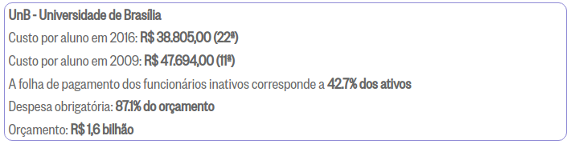

Plano de Custos
Custos de pessoal
O custo com pessoal considerando o contexto da disciplina, em que a equipe é formada por 11 integrantes de graduação em Engenharia de Software. O cálculo valor / hora utilizado foi baseado nos valores apresentados pelo Infográfico do O Globo que conta com informações sobre universidades públicas de todo o Brasil.

A partir do valor de R$ 38.805,00 anual, que é o custo por estudante universitário federal, o cálculo para estimativa de custo com pessoal levou em consideração o valor por dia e a quantidade de dias do projeto durante o semestre, conforme disposto na planilha ao início do documento. Assim, o cálculo para o custo total se dá por:
Quantidade de integrantesXValor por diaxQuantidade de dias do projeto=Custo total com pessoal
Custos com equipamentos
A aquisição de equipamentos de trabalho é um dos fatores considerados para o custo, de modo que foi levantado um comparativo de preços baseado nas seguintes especificações necessárias para excutar um projeto que utiliza emulador para aplicações mobile. As especificiações são: processador Intel Core i7, 8GB de memória RAM e presença de SSD. O preço unitário que consta na tabela foi obtida pela média de preço dos 6 notebooks com os melhores preços disponibilizados no site de comparativos. O cálculo realizado é dado por:
Quantidade de integrantesXValor de um equipamento=Custo total com equipamentos
Custos adicionais
O desenvolvimento do projeto requer um o gasto energético associado ao uso contínudo dos equipamentos adquiridos e especificados no item anterior. Assim, baseado no preço do KWh dado por R$11,85 da região de Brasília, disponível para consulta no site de tarifas da ANEEL, e no consumo energético de 0,065 KW, foi feita a tabela de custos adicionais em termos de gasto energérico.
O cálculo utilizado para montar a tabela é dado por:
Potência do Dispositivo em KWxTotal de Horas Trabalhadas na semana pelo timexPreço do KWh=Custo de energia da semana
Em termos de gastos com internet, a média de preço de internet em Brasília estimada em R$ 108,92, vou obtida a partir da média de valores dos planos de internet banda larga disponibilizados via site comparador. O cálculo realizado para definação do custo relacionado à internet é dado por:
Valor médio de internetxQuantidade de integrantesxQuantidade de dias=Custo total de Internet no projeto
Custos de Publicação
O custo de publicação foi levado em consideração os o valores base para hospedagem em nuvem e de uma conta de desenvolvedor para o para disponibilização do aplicativo nas loja de aplicativos PlayStore. A conta de desenvolvedor é cobrada em Dólar americano e para o cálculo do gasto, foi feita uma equivalência com o Real brasileiro de acordo com a cotação do dia 04 de abril de 2022.
Obs.: A planilha diretamente no Google Sheets pode ser vista clicando neste LINK.
Agile EVM
EVM (Earned Value Management) é uma metodologia de gerenciamento de projeto que integra cronograma, custos e escopo para medir o desempenho do projeto. Com base em valores planejados e reais, o EVM prevê o futuro e permite que os gerentes de projeto ajustem oq eu for preciso ao longo do processo. Além disso, é utilizada para integrar escopo, cronograma e recursos em gerência de projetos, que consiste em medir objetivamente o desempenho e o progresso do projeto comparando custos (real e planejado) e valor agregado.
Esse documento está em constante evolução já que as sprints têm tempo de duração de 7 dias, e ao longo delas várias tarefas são entregues e vários pontos são completados.
Parâmetros das Sprints
| Nome | Definição |
|---|---|
| PP | Planned Points - Pontos Planejados por Sprint |
| PC | Points Completed - Pontos Concluídos por Sprint |
| PI | Incompleted Points - Pontos Incompletos por Sprint |
| AP | Added Points - Pontos Adicionados por Sprint |
| SC | Sprint's Cost - Orçamento gasto por Sprint |
| TSC | Total de Sprints Concluídas |
| TSE | Total de Sprints Estimadas |
Parâmetros das Releases
| Nome | Definição |
|---|---|
| PRP | Planned Release Points - Pontos Planejados por Release |
| RPC | Completed Release Points - Pontos Concluídos por Release |
| BAC | Bugeted Cost at Completion - Orçamento estimado por Release |
| AC | Actual Cost - Custo até o momento |
| PV | Planned Value - Valor Planejado por Release |
| EV | Earned Value - Valor Agregado por Release |
Parâmetros Gerais do Projeto
| Nome | Definição |
|---|---|
| CPI | Cost Performance Index - Índice de Desempenho de Custos |
| CPV | Cost Performance Variance - Variação de Desempenho de Custo |
| SPI | Schedule Perfomance Index - Índice de Desempenho de Prazo |
| SPV | Schedule Perfomance Index - Variação de Desempenho de Prazo |
Padrões do EVM e definições de equações
A maneira de interpretar a saúde dos prazos nos permite analisar os valores Planejados e Agregados ao longo do projeto, de acordo com as seguintes fórmulas:
| Equação | Definição |
|---|---|
| BAC | Orçamento estimado para a Release, detalhado na tabela de custos |
| AC = EV / BAC | Custo até o momento |
| PV = BAC * (TSC / TSE) | Valor Planejado |
| EV = BAC * (RPC / PRP) | Valor Agregado |
| CPI = EV / AC | Índice de Desempenho de Custos |
| CPV = EV - AC | Variação de Desempenho de Custo |
| SPI = EV / PV | Índice de Desempenho de Prazo |
| SPV = EV - PV | Variação de Desempenho de Prazo |
Referências
GLASSDOOR, Salário de estagiários Engenharia de Software, Brasil. mar. 2022 Disponível em: https://www.glassdoor.com.br/Sal%C3%A1rios/estagi%C3%A1rio-de-desenvolvimento-de-software-sal%C3%A1rio-SRCH_KO0,41.htm
VEC Consultoria, Análise de Valor Agregado em projetos (EVM). Disponível em: http://valorecompetencia.com.br/gestao_de_projetos/analise-de-valor-agregado-evm-em-projetos-conheca-e-aprenda-a-calcular
Consumo de energia de notebooks https://www.showmetech.com.br/eletronicos-que-mais-consomem-energia/
Planos de Internet em Brasília, Disponível em: https://podecomparar.com.br/telecom/internet
WRIKE, Agile EVM, 2022. Disponível em: https://www.wrike.com/agile-guide/faq/what-is-agile-evm/
Preço para publicar um aplicativo na Play Store, Disponível em: https://support.google.com/googleplay/android-developer/answer/10281818?hl=pt-BR
Infográfico O Globo. Ranking do custo anual por aluno nas federais (2016). Disponível em: https://infograficos.oglobo.globo.com/brasil/raio-x-do-custo-por-aluno-nas-universidades-federais.html
Gerenciamento De Valor Agregado (EVM) Em Projetos Ágeis. Disponível em: https://hiflexconsultoria.com.br/gerenciamento-de-valor-agregado-evm-em-projetos-ageis/
Histórico de versão
| Data | Versão | Descrição | Autor(es) |
|---|---|---|---|
| 11.03.2022 | 1.0 | Criação do documento | Rafaella Junqueira |
| 10.04.2022 | 1.1 | Inclusão do Agile EVM | Rafaella Junqueira |